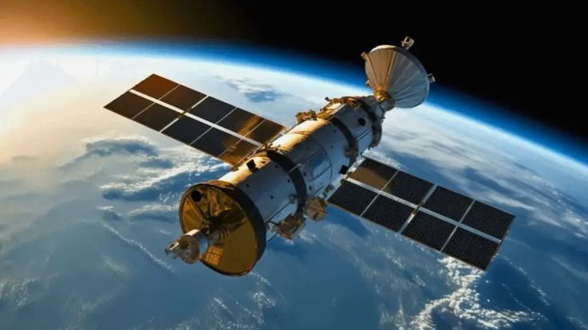

LEO
300–1500 KM
Low Earth Orbit
HI - SPEED
22,236 MI
Orbit Geostasioner
EARTH
365 DAY
Orbit Periode
— EXOPLANET EXPLORER
FIND NEW WORLDS
Dive into the vast universe of exoplanets! Filter by discovery method or search by name to uncover fascinating details about distant worlds confirmed by missions like Kepler and TESS.


— DISCOVERIES
CONFIRMED WORLDS
Loading exoplanet data... Please wait.